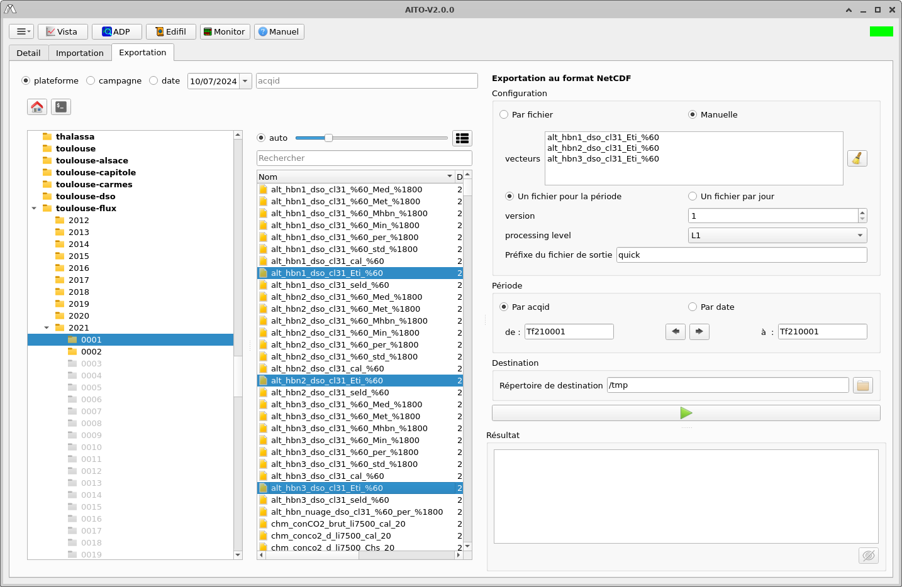

Pour exporter des données AIDA au format NetCDF
Les données AIDA sont exportées grâce à prod_CDF.py
(voir document de référence AIDA : user.pdf)
Configuration par fichier
Sélectionner un fichier de configuration.
Configuration manuelle
Sélectionner les vecteurs dans la liste de navigation (à droite)
Pour supprimer des vecteurs de la liste, les sélectionner puis utiliser le
bouton
.